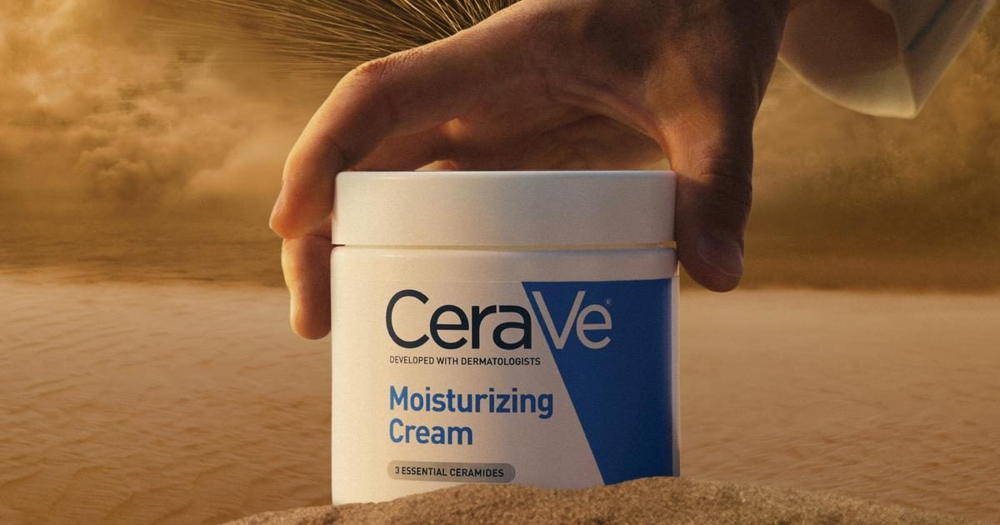

CeraVe становится официальным увлажнителем Арракиса к премьере «Дюны: Часть третья
Известный бренд уходовой косметики объявил о партнёрстве с киностудией Warner Bros. и Legendary Pictures: его классический крем в баночке получил статус официального увлажняющего средства вымышленной планеты Арракис. Это решение подчёркивает схожесть экстремально сухой среды фильма с реальными проблемами кожи, сталкивающихся с обезвоживанием в холодное или засушливое время года.
Сотрудничество бренда с кинофраншизой
Партнёрство стало первым в истории бренда кинопроектом и связало продукт с финальной частью саги Дени Вильнёва, которая выходит на экраны в декабре. Маркетинговая команда отмечает, что образ безводной пустыни идеально иллюстрирует задачу, которую решает крем — восстановление гидролипидного барьера при сильном трансепидермальном потере влаги.
Такая коллаборация позволяет привлечь внимание аудитории к научной основе средства, а не только к визуальному имиджу. В пресс‑релизе подчёркивается, что связь между фантастическим сеттингом и реальной дерматологической практикой делает сообщение понятным и запоминающимся для широкого круга потребителей.

Состав и технология увлажнения
Формула опирается на три керамида, идентичных коже, гиалуроновую кислоту и патентованную систему MVE, обеспечивающую постепенное высвобождение увлажняющих компонентов. Керамиды восполняют липидный слой, гиалуроновая кислота удерживает воду в роговом слое, а технология MVE создаёт депо‑эффект, продлевающий действие средства в течение длительного периода.
Текстура крема насыщенная, но не оставляет липкой плёнки, что делает его удобным для нанесения как на лицо, так и на тело. Отсутствие ароматизаторов снижает риск раздражения чувствительной кожи, а мультифункциональность позволяет заменить несколько отдельных средств одним универсальным продуктом.

Экспертное мнение дерматолога
Советник бренда, сертифицированный дерматолог, указывает, что хотя условия Арракиса вымышлены, проблема сухости кожи имеет вполне реальную физиологическую основу. По его словам, воздействие низкой влажности, ветра и отопительных систем приводит к нарушению барьерной функции, что проявляется шелушением, стянутостью и повышенной чувствительностью.
Врач подчёркивает важность своевременного восстановления липидного мантия с помощью средств, содержащих физиологические липиды и увлажняющие агенты. Регулярное применение такого крема способствует быстрому нормализации барьера и снижает вероятность развития воспалительных реакций на фоне сухости.
Практическое применение в бытовых условиях
В период отопительного сезона или в климатах с низкой относительной влажностью кожа теряет влагу интенсивнее, чем в комфортных условиях. Нанесение крема сразу после умывания или душа, пока кожа ещё влажна, максимизирует закрепление воды и ускоряет восстановление защитного слоя.
Средство подходит для ежедневного использования, не требует специальных навыков и может быть включено в базовый уход за лицом и телом. Его универсальность делает удобным вариантом для всей семьи, особенно когда нужно быстро устранить ощущение стянутости после пребывания на морозе или в кондиционированном помещении.
Когда и как проконсультироваться с дерматологом перед использованием
Перед тем как включить крем в ежедневный уход, полезно обсудить с дерматологом текущее состояние барьера кожи, наличие хронических дерматозов, аллергических реакций или приём системных препаратов, влияющих на чувствительность. Врач поможет определить, подходит ли состав с керамидами и гиалуроновой кислотой для вашего типа кожи, и рекомендует провести тест на небольшой участке за ухом или на запястье в течение суток, чтобы исключить раздражение. Также стоит уточнить, какие дополнительные средства (например, ретиноиды или кислоты) можно сочетать без риска перегрузки барьера.
Крем может быть неудобен при выраженной жирной себорее, открытых ран, остром воспалении или известной непереносимости керамидов и гиалуроновой кислоты — в таких случаях специалист предложит альтернативу. Результат увлажнения зависит от регулярности нанесения, исходного состояния гидролипидного манжета, климатических условий и соблюдения режима очищения: агрессивные пены или горячая вода могут нивелировать эффект барьерного восстановления. Следование рекомендациям врача и постепенное введение средства повышает вероятность комфортного ощущения кожи.
Коротко: CeraVe использует кинопартнёрство, чтобы напомнить о важности барьерного ухода в сухих условиях. Состав на базе керамидов, гиалуроновой кислоты и технологии MVE обеспечивает длительное увлажнение и быстрое восстановление липидного мантия.
Какие уходовые средства выбираете для защиты кожи в сухую и холодную погоду?